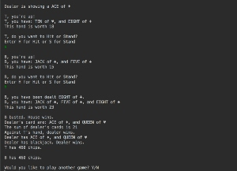
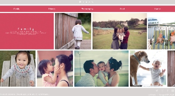

Welcome
Welcome to Thuydung Khong's porfolio page, where you will learn all about
who she is, her interests, her work, and her goals.
Welcome to Thuydung Khong's porfolio page, where you will learn all about
who she is, her interests, her work, and her goals.
Hi there!
My name is Thuydung Khong. I am currently studying software development at Zip Code Wilmington.
I consider myself to be a very creative person, and this is reflected in my hobbies. I express
my creativity though photography, cooking/baking, and needlecrafts such as knitting. These
hobbies require that I follow a set of directions but allowing me ample of room to express
my creativity just as I software development is allowing me to do.
In addition to being known for being creative, I was also considered a very tech-savy person in
all of my previous positions. I am persuing a career in software engineer is because I can see
the limitless potential in the field and I want to apply my creativity and my tech-savy skills
in making a difference in our future.
Below are links to some of the coding projects I have been working on, either individually
or in a team:
On day 6 of the Zip Code Wilmington program, we were assigned the Scientific Calculator project. We worked on a team of 3 people using only Java in the beginning then incorporating JavaFX individually for the user interface. I was responsible for creating the methods for the calculations. I've always known the power behind a few lines of codes, but even as small as this project was, I was really amazed seeing how our team's codes build up line by line into something functional. This little project really motivated me to push myself harder, to learn more, to build bigger, better applications.
In the Casino project we worked as a team of 6 people responsible for creating 3 casino games. I worked on the blackjack game along with another teammate. As much as I like working on my own, I find that I like working on a team just as much. I find that when I work on a team, I push myself harder to meet my teammates' expectations, I get a lot of support from my teammates when I need it, and seeing the different ways code to come to the same conclusion made me reevaluate myself and my codes so that I can be a better developer.
As part of the Zip Code Wilmington program curriculum, each student is required to come up with an idea for an application with a topic that we are passionate about, called the Passion Project. For my project, I wanted to build an Instagram copycat because I love photography. I love that through photographs you can share all the life's great moments and amazing ideas. As great as Instagram is already, there are a few things I would like to change to customize my preferences as a user.
If you are interested in learning more about me, the services I can offer for you or your company, or just want to say hi, please leave a message.
{kind=link}
{kind=link}
{kind=link}